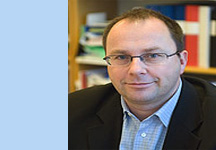
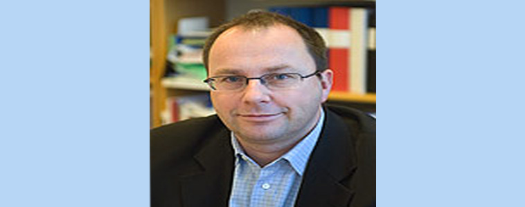
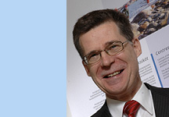
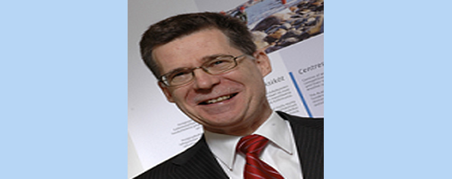
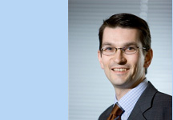
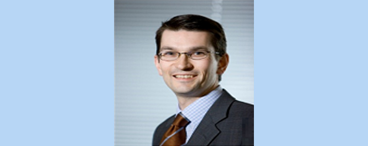
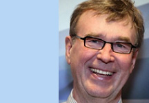
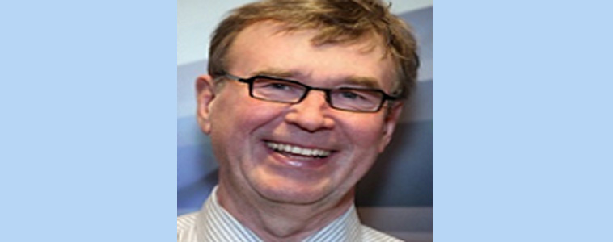

Dr. Olli Mertanen
Organization Committee Chair
Dr. Janne Roslöf
Further information
info@icee2012.fi
Website
www.icee2012.fi
Conference Program
The topical program will include keynote presentations, parallel paper and poster sessions and workshops on state-of-the-art topics on Engineering Education. See the Call for Papers brochure for detailed information on the conference themes.
Program outline
Additional information on topical program contents and schedule will be published on this page as the conference planning proceeds. The preliminary topical program outline is as follows:
| Monday, July 30 | Arrivals, pre-conference meetings |
| Tuesday, July 31 | Opening ceremony, keynote presentations, parallel sessions |
| Wednesday, August 1 | Keynote presentations, parallel sessions |
| Thursday, August 2 | Keynote presentations, workshops |
| Friday, August 3 | Parallel sessions, closing ceremony |
Keynote speakers
The conference program includes a series of keynote presentations given by distinguished representatives of academia, industry and decision makers. Currently, the following keynote speakers have confirmed their participation in the conference:
Prof. Johan Malmqvist is chair Professor in Product Development and Dean of Education at Chalmers University of Technology in Gothenburg, Sweden. He obtained his Ph.D. from Chalmers in 1993 and was appointed chair professor in 2005. His research focuses on development methodologies and IT support for product development. Malmqvist is also engaged in the renewal of engineering education. He is one of the co-founders of the Conceive-Design-Implement-Operate (CDIO) Initiative, an international effort that aims to develop a new vision for engineering education. Prof. Markku Mattila is the past President and Director General of the Academy of Finland, the prime funding agency for basic research in Finland (retired March 2012). He received his doctoral degree from Tampere University of Technology. Starting from 1980 he worked at Tampere University of Technology as Professor of Safety Engineering, Dean and Vice Rector. In 2000 he moved to the Ministry of Education, where he served as Director of the University Division; he was responsible for the development of the Finnish national university policy as well as for governmental steering of Finnish universities. He is Vice Chair of the European Science Foundation. Mr. Max Mickelsson is responsible for Corporate Affairs and CSR activities in Microsoft Finland. He joined Microsoft in 2005 and has beside Finland also worked for the Microsoft Europe, Middle East and Africa HQ based in London. Before joining Microsoft, Mickelsson has a 12 years’ experience working in public administration in Finland. He has been a political adviser for the Minister of Labor, Minister of Finance and the Minister of the Interior. Max has also been the Secretary General of the Parliamentary Group on the National Coalition Party and a political adviser to the Speaker of the Parliament. Mickelsson has a M.Sc. in Political Science at Åbo Akademi University (1997). Prof. Yrjö Neuvo is Professor and Research Director at Aalto University. He received his Ph.D. from Cornell University in 1974. He was Chief Technology Officer and a member of the Group Executive Board in Nokia in 1993 – 2005. Before joining Nokia, he had a 19 year academic career as Professor of Signal Processing at Tampere University of Technology, as National Research Professor at the Academy of Finland and as a visiting professor at University of California. Currently, he is Member of the Governing Board of European Institute of Innovation and Technology. He has received four honorary doctorates. He is Life Fellow of the IEEE.Workshops
A set workshops on interesting Engineering Education topics are provided to the participants as a part of the topical program of the conference. According to the current program plan, the workshops will take place on Thursday (August 2) and each workshop includes 2 hours active working time. There are three confirmed workshops at the moment:
- Better Engineers with CDIO
- Enhance your Teaching utilizing Automatic Assessment with Immediate Feedback
- Producing Innovation Competencies through Innovation Pedagogy
- The Attributes of a Global Engineer Project
- Database as a CS/E Competency: A Software Engineering Attribute
- Object-Oriented Modeling Tool Applied to Engineering and Informatics Education
If you are interested in organizing a workshop, please do not hesitate to propose a topic. Send your suggestion to info@icee2012.fi .